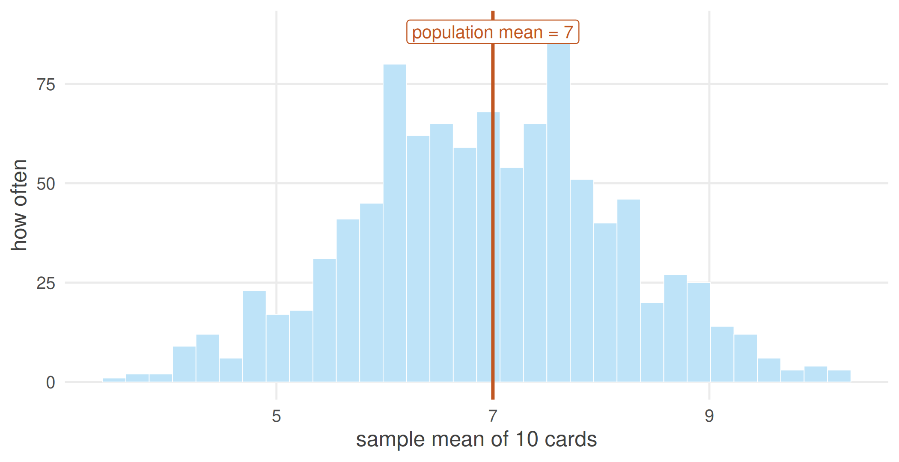
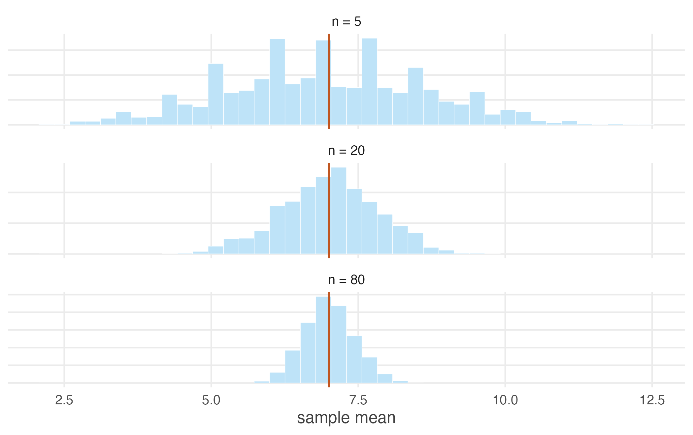

1.7 The sampling distribution
What exactly was that picture of a thousand survey means?
Now we can name it properly.
The distribution of a random variable describes how raw observations vary — how earnings differ from worker to worker.
A sampling distribution describes how a statistic varies across repeated samples of a fixed size — how the survey mean differs from survey to survey.
These are two different distributions and confusing them is the most common error in this material.
The earnings of 20,000 workers form one distribution: skewed, wide, running from near zero into the millions.
The means of 1,000 surveys form quite another: symmetric, narrow, clustered around the truth.
The second is not a summary of the first. It is a distribution of a different quantity — not of people, but of surveys.
A worked example we can check
Real data has a drawback for learning: we never know the true answer, so we cannot tell how well the machinery is doing. So build a population where the truth is known exactly.
Take a deck of cards, scored A = 1, J = 11, Q = 12, K = 13, and 2 through 10 at face value.
#> N mu sigma
#> 52.000 7.000 3.778The population mean is exactly \(\mu = 7\). Now draw ten cards and average them:
#> [1] 5.7Note replace = TRUE: each card goes back before the next draw.
That is not a technicality. It is what makes the draws independent, the assumption we just spent a page on. Draw without replacement and each card removed changes what is left, so the draws are dependent and the sample mean varies slightly less than theory predicts.
It is also the better model of what we usually mean. Surveying 2,000 people does not meaningfully deplete a population of a billion.
Not 7. Draw again and you would get something else again — sampling variation, exactly as with the earnings surveys. So look at the whole sampling distribution:
set.seed(7)
sample_means <- replicate(1000, mean(sample(deck, size = 10, replace = TRUE)))
c(mean_of_sample_means = mean(sample_means),
sd_of_sample_means = sd(sample_means))#> mean_of_sample_means sd_of_sample_means
#> 6.932 1.201
Figure 1.6: One thousand sample means, each from 10 cards. Individual samples miss the population mean constantly. Their average lands almost exactly on it.
Two things happened, and both matter.
The sample means are centred on the population mean. No single sample got it right, but their average is 6.932 — essentially 7. The sample mean is an unbiased estimator: not right, but not systematically wrong, which is a different and far more useful property.
The sample means vary much less than the cards do. The population standard deviation is about 3.78; the sample means have a standard deviation of about 1.2. Averaging has cancelled out much of the noise.
What happens as the sample grows
set.seed(7)
sizes <- c(5, 10, 20, 40, 80)
results <- t(sapply(sizes, function(n) {
m <- replicate(2000, mean(sample(deck, size = n, replace = TRUE)))
c(n = n, mean = mean(m), sd = sd(m), theoretical_sd = sd(deck) / sqrt(n))
}))
round(results, 3)#> n mean sd theoretical_sd
#> [1,] 5 6.932 1.688 1.690
#> [2,] 10 7.022 1.165 1.195
#> [3,] 20 7.009 0.845 0.845
#> [4,] 40 7.019 0.597 0.597
#> [5,] 80 6.996 0.415 0.422
Figure 1.7: Sampling distributions of the mean for growing sample sizes. The centre never moves. The spread collapses.
Every row is centred on 7 — the sample mean is unbiased at any sample size. But the spread shrinks steadily, and in a completely predictable way. Compare the last two columns of the table: the observed standard deviation of the sample means matches \(\sigma/\sqrt{n}\) almost exactly.
Two results, which we prove in the next section:
\[E(\bar{X}) = \mu \qquad\qquad \mathrm{Var}(\bar{X}) = \frac{\sigma^2}{n}\]
The sample mean is centred on the population mean, and its spread falls as the sample grows. The quantity \(\sigma/\sqrt{n}\) is the standard error, and it is the single most important number in applied statistics: it is how wrong you should expect to be.
Note the square root. To halve your standard error you must quadruple your sample. Precision is expensive, and it grows more expensive the more of it you already have.
This is why surveys of two thousand people are common and surveys of two lakh are not: the second costs a hundred times as much for about seven times the precision.